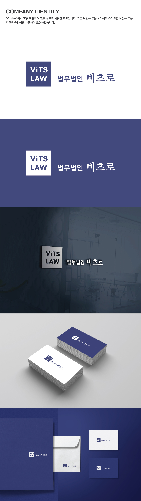

Law Firm
요청사항
- -. Business: 로펌 (이름: 비츠로, Vitslaw)
- -. Logo type: symbol + wordmark
- -. 전달 무드: 스마트한, 세련된
- -. 사용처: 명함, 서류 봉투, 온라인, 간판 등에 인쇄 용도
- -. 기타: 한국에서는 로펌하면 연륜이 있는 직종으로 떠올리지만 요청 로펌의 경우 변호사 모두 40대 변호사들인 경우라 40대 중후반 느낌이나 법률 분야라 너무 어리지 않은 로고 컨셉 요청
디자인
- 네이밍에 빛 의미를 담고 있어서 "i"에 의미를 담은 심볼로 디자인하였습니다. 한국에서 법률 로고로 보통 법률 서류의 도장 직인 형상으로 정사각형 형태가 익숙한 점을 참고하여 정사각 형태에 심볼을 담았습니다. 로펌의 경우 지적 서비스를 제공하는 분야라 문서에서 흔히 접하는 셰리프 계열의 워드마크로 "비츠로"를, 색의 경우 스마트한 블루와 고급스러운 보라를 섞은 색으로 표현하였습니다.
Requirements
- -. My client's business: law firm (Name: Vitslaw)
- -. Logo type: symbol + wordmark
- -. Wanted mood: smart and trendy
- -. Applications: print on paper such as business cards and document envelopes and online
- -. Etc: Law firms generally have serious and old mood in Korea, but my clients are not old. They want a male persona mid to late 40s who is not too old but not too young. And the name, Vitslaw means "toward light" in Korean.
Design Concept
- Vitslaw has a meaning related to light; "i" has the shape of the light. When searching logos of the law field in Korea, I noticed that square shape is normally used like a stamp mark. The English name of Vitslaw is designed in a sharp square. Law firms provide intellectual services; serif fonts are used to add smart mood for "비츠로", the Korean name of Vitslaw. As for color, blue for smart mood and purple for luxurious mood are mixed.
